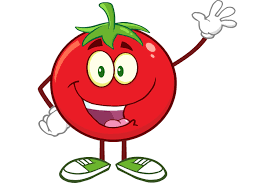
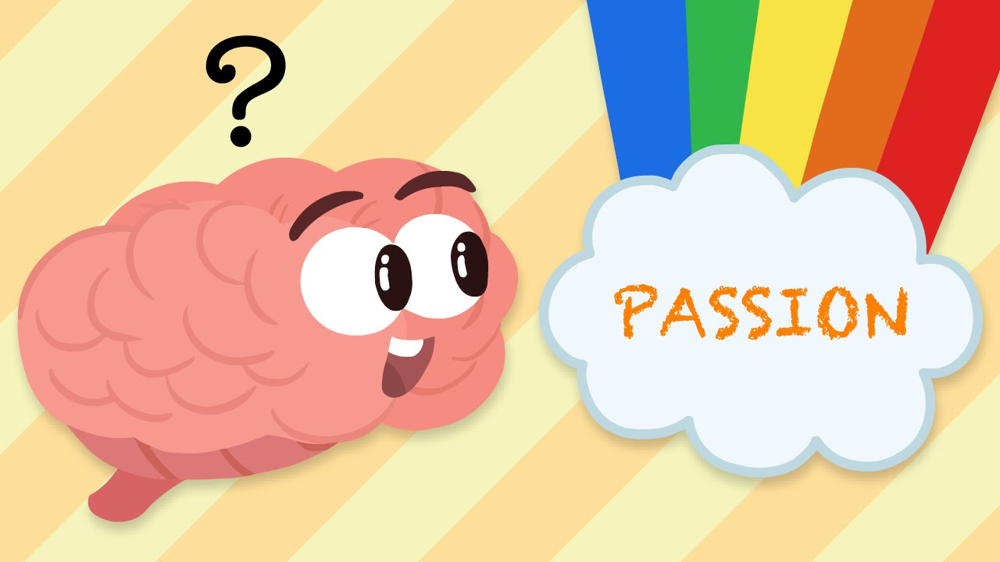
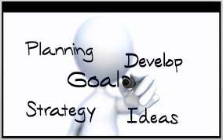

My name is M.Abubakar Nofal.I am a MUSLIM from religion.

I am interested in computers and IT field so I have chosen BSCS as my career.
As fast is famous for it's IT field studies and CS so i gave their entry test
and luckily got selected for admission.
Before coming to university their were many thoughts about the university
which came in my mind that what will i do after this degree.
But after coming to university i am thinking how to get good grade in PROGRAMMING AKA PF :)
BUT I am sure that after completing my degree i will get good job.
MY PASSION
My passion is all about computers and software.
I love to play games and promote E sports in pakistan.
i play battleroyale games and open world games like PUBG,GTA 5 etc and play their tournaments.
I lost some tournaments and also won some tournaments.
I have also joined FAST E gaming society to polish my E gaming skills.
In the future i will also try to get into E sports as it is emerging in pakistan.
MY GOALS OF LIFE
I have not specified my goals but my main goals are: